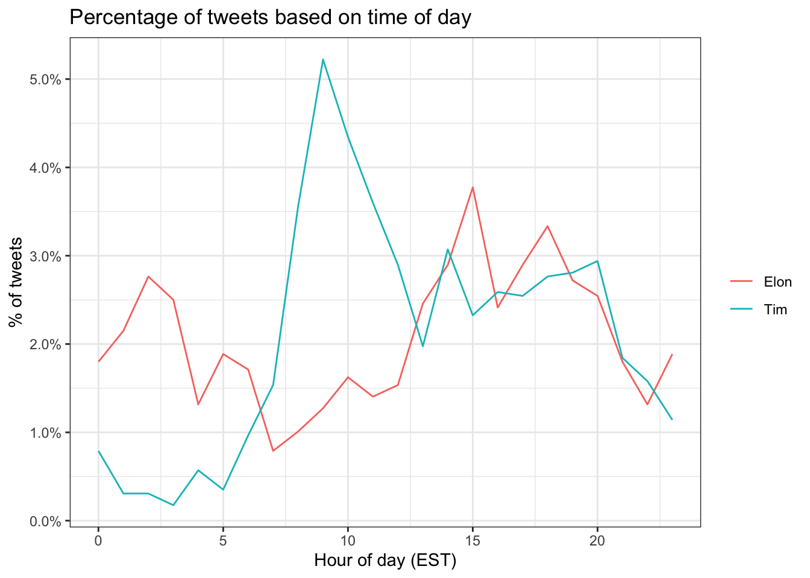
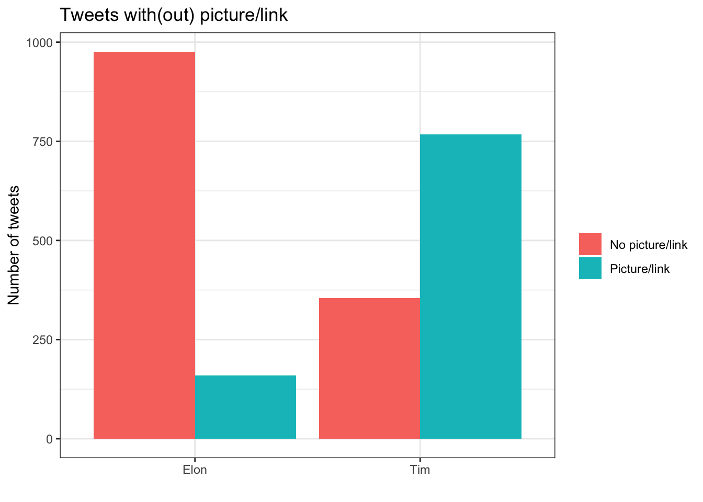
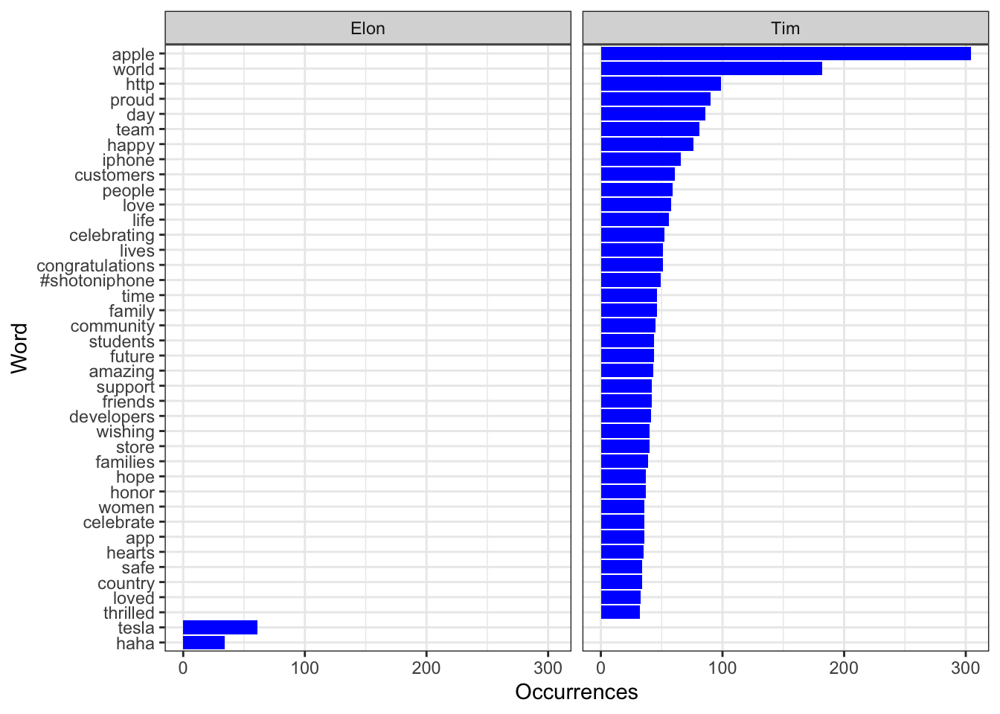
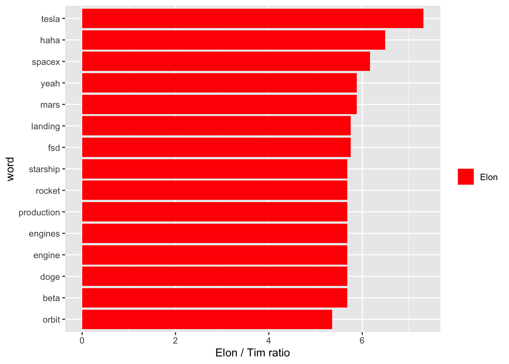
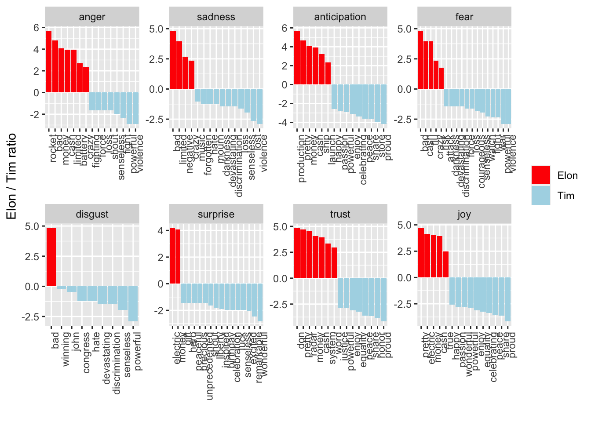

REARRANGE SECTIONS OF REPORT W/ HYPOTHESIS AND METHODS HERE
For this assignment, we are interested in the tweets between Elon Musk and Tim Cook. Our main research question is: How do tweets from Elon Musk and Tim Cook differ?. Before starting the research procee, we hypothesized that there will be a large difference in the sentiment of tweets; that is, we postulate than tweets from Elon Musk will incorporate more extreme sentiments that those from Tim Cook. Throughout this report, we will check if that hypothesis is valid or not.
In order to investigate potential differences between the tweets of Elon Musk and Tim Cook, our methodology covered the following:
For our predictive algortihm, we divided our data into test and train data and trained the algorithm to identify the srouces of the tweet based on the following variables:
#load data
setwd('~/Dropbox/516_Eels/HW_9')
elon = read_csv('elonmusk_tweets.csv')##
## ── Column specification ────────────────────────────────────────────────────────
## cols(
## id = col_double(),
## source = col_character(),
## created_at = col_datetime(format = ""),
## favorite_count = col_double(),
## retweet_count = col_double(),
## text = col_character()
## )elon$user = "Elon"
cook = read_csv('tim_cook_tweets.csv')##
## ── Column specification ────────────────────────────────────────────────────────
## cols(
## id = col_double(),
## source = col_character(),
## created_at = col_datetime(format = ""),
## favorite_count = col_double(),
## retweet_count = col_double(),
## text = col_character()
## )cook$user = "Tim"
combined <- rbind(elon, cook) #combine data frames
nrc <- read_rds("nrc.rds") #rds is native format for r data
rogan = read_csv('joerogan_tweets.csv')##
## ── Column specification ────────────────────────────────────────────────────────
## cols(
## id = col_double(),
## source = col_character(),
## created_at = col_datetime(format = ""),
## favorite_count = col_double(),
## retweet_count = col_double(),
## text = col_character()
## )rogan$user = "Joe"
siwa = read_csv('itsjojosiwa_tweets.csv')##
## ── Column specification ────────────────────────────────────────────────────────
## cols(
## id = col_double(),
## source = col_character(),
## created_at = col_datetime(format = ""),
## favorite_count = col_double(),
## retweet_count = col_double(),
## text = col_character()
## )siwa$user = "Jojo"Tim Cook appears to tweet more often in the morning (between 7:00am - 10:00am), whereas Elon is much more likely to tweet in the very early morning / late night (12:00am - 5:00am). Tim’s tweet reach a significant peak toward 9:00am, which is a sign that there are potentially scheduled tweets that go out during that time of the day. EXPLAIN THE GRAPH’S PEAKS WOULD BE AWESOME
#time of day of tweets
combined %>%
count(user, hour = hour(with_tz(created_at, "EST"))) %>%
mutate(percent = n/sum(n)) %>%
ggplot(aes(x = hour, y = percent, color = user)) +
labs(title = "Percentage of tweets based on time of day",
x = "Hour of day (EST)",
y = "% of tweets", color = "",
fill = "User") +
scale_y_continuous(labels = scales::percent)+
geom_line() + theme_bw()
We find that Tim Cook is much more likely to include a picture or a hyperlink in his tweets. USE THE FIRST SET OF LINES OF CODE AND ARTICULATE THE EXACT NUMBERS
# Count the number of tweets with and without picture/links by device
pic_ct <- combined %>%
filter(!str_detect(text, '^"')) %>%
count(user,picture = ifelse(str_detect(text, "t.co"),
"Picture/link", "No picture/link"))
# Make a bar plot
ggplot(pic_ct, aes(x = user, y = n, fill = picture)) +
geom_bar(stat = "identity", position = "dodge") +
labs(title = "Tweets with(out) picture/link", x = "", y = "Number of tweets", fill = "") +
theme_bw()
The first thing we did was create a regex pattern that removed any unwanted symbols/characters.
# Create a regex pattern
reg <- "([^A-Za-z\\d#@']|'(?![A-Za-z\\d#@]))"
# Tokenize
tweet_txt <- combined %>%
filter(!str_detect(text, '^"')) %>%
mutate(text = str_replace_all(text, "@https://t.co/[A-Za-z\\d]+|&", "")) %>%
unnest_tokens(word, text, token = "regex", pattern = reg) %>%
filter(!word %in% stop_words$word,
str_detect(word, "[a-z]"))
tweet_txt <- tweet_txt[!grepl("@", tweet_txt$word),] #the `reg` object wasn't removing the symbols as desired
tweet_txt <- tweet_txt[!grepl("https", tweet_txt$word),] Then, using the newly tokenized dataset, we show the words that occur most often in Elon’s tweets and Tim’s tweets. Unsurprisingly, Elon’s most-tweeted word is Tesla, followed by haha and Tim’s most-tweeted word is Apple and world.
tweet_txt %>%
group_by(user) %>%
count(word, sort = TRUE) %>%
head(40) %>%
mutate(word = reorder(word, n)) %>%
ggplot(aes(x = word, y = n)) +
geom_bar(stat = "identity", fill = "blue") + facet_wrap(~user) +
ylab("Occurrences") + xlab("Word") +
coord_flip() + theme_bw()
We join the NRC dictionary to our data frame that contains the texts of the tweets, into a new data frame called tweet_sentiment. Then we assess each word and calculate a logarithmic ratio comparing the users to determine the difference. We take this log ratio, and plot it: for the words with the largest difference when it comes to being tweeted by either Elon or Tim, the top 15 are all words that coming from Elon.
#RATIO TIME
#join nrc first
tweet_sentiment <- inner_join(tweet_txt, nrc, by = "word") %>%
group_by(sentiment) %>% head(10)
#ratio of words and plot the ratio
tweet_ratio <- tweet_txt %>%
count(word, user) %>%
group_by(word) %>%
filter(sum(n) >= 5) %>%
spread(user, n, fill = 0) %>%
ungroup() %>%
mutate_if(is.numeric, ~((. + 1) / sum(. + 1))) %>%
mutate(logratio = log2(Elon / Tim)) %>%
arrange(desc(logratio))
tweet_ratio %>%
top_n(15, abs(logratio)) %>%
ungroup() %>%
mutate(word = reorder(word, logratio)) %>%
ggplot(aes(x = word, y = logratio, fill = logratio < 0)) +
geom_bar(stat = "identity") +
coord_flip() +
ylab("Elon / Tim ratio") +
scale_fill_manual(name = "", labels = c("Elon", "Tim"),
values = c("red", "lightblue")) #note it only has elon because the top 15 logratios are all ELon
positive or negative sentiment.In general, it appears that Elon’s tweets have a stronger sentiment (i.e. more angry, more sad, more joyful) than Tim’s tweets.
MORE EXPLANATION/ANNOTATIONS NEEDED BY WHOEVER SAID THEY WERE WRITING! Calling out specific examples would strengthen the explanation.
# we can't control the dictionary
#INDIVIDUAL SENTIMENT TIME
tweet_sentiment <- tweet_ratio %>%
inner_join(nrc, by = "word") %>%
filter(!sentiment %in% c("positive", "negative")) %>%
mutate(sentiment = reorder(sentiment, -logratio),
word = reorder(word, -logratio)) %>%
group_by(sentiment) %>%
top_n(15, abs(logratio)) %>%
ungroup()
# Plot the log odds ratio of words by user in groups of sentiments
ggplot(tweet_sentiment, aes(x = word, y = logratio, fill = logratio < 0)) +
facet_wrap(~ sentiment, scales = "free", nrow = 2) +
geom_bar(stat = "identity") +
theme(axis.text.x = element_text(angle = 90, hjust = 1)) +
labs(x = "", y = "Elon / Tim ratio") +
scale_fill_manual(name = "", labels = c("Elon", "Tim"),
values = c("red", "lightblue"))
Extract tweets from two famous people who are reasonably different from each other in their views / speech patterns etc. Comparing two of the Kardashians might be tough, but comparing Joe Biden and Kim Kardashian might be more feasible. Ideally you would want a less silly comparison. Two political candidates with opposing views is probably more interesting. You can also try and compare two scientists, two activists, or two celebrities, but try and make this comparison interesting in some way and try to not be disparaging / condescending. We are not trying to develop an algorithm to shame people, after all, they can most definitely do it without our help themselves most of the time.
Develop an algorithm that allows to predict who of the politicians tweeted using just the information in the text of the tweet and the time of the tweets. You are not allowed to use the information about the user. You can use sentiments, individual words, punctuation and anything else as a source of features.
Apply the algorithm to new tweets from both users to estimate how well the predictions work. TO DO: Apply algorithm to test data
Try the prediction algorithm with a different set of tweets from unrelated users. Discuss how the algorithm works / breaks in this case. TO DO: Use on Joe Rogan data and someone else
a.-c. is group work.